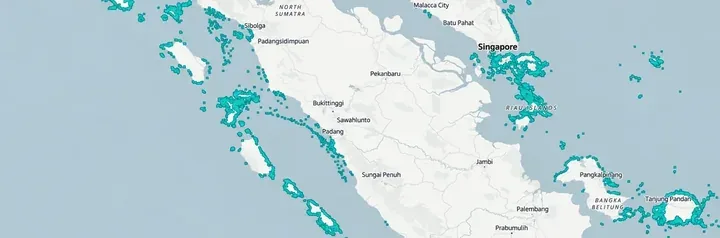
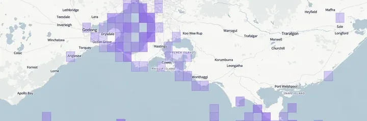
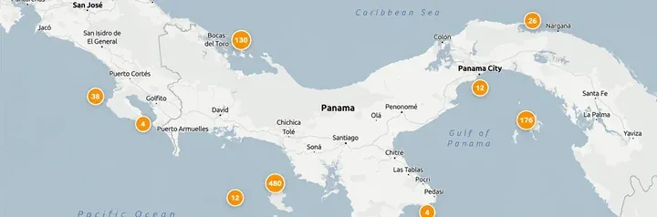
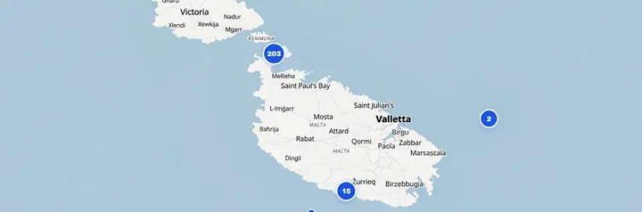

Reef extent
Mapped reef distribution, not reef health.

Send a message to the DiveAtlas maintainer.
Your suggestion goes to DiveAtlas for review. It won’t be added automatically.
Explore coral reefs, marine observations and dive sites around the world.
Mapped reef distribution, not reef health.

Coral observations from marine biodiversity records; purple squares show a density grid at some zoom levels.

Reef-fish survey sites and observed density.

Known recreational dive sites worldwide.

Seafloor relief and underwater terrain structure.
Seafloor depth lines, available at supported zoom levels.